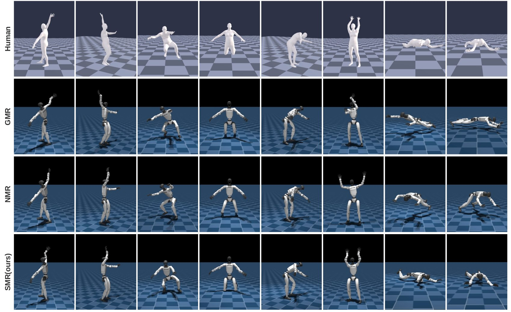
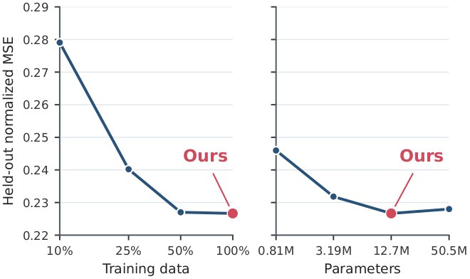
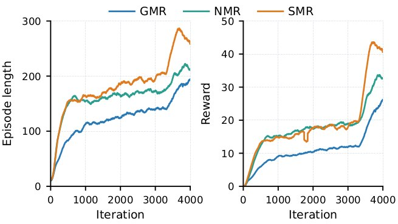

Upper-body motion
Streaming arm motion from a human operator to G1.
GMR
Physical Unitree G1 · independent recording
SMR (ours)
Physical Unitree G1 · independent recording
Learning human motion. Realizing robot motion.
learning streaming motion retargeting
for humanoids from human
semantic
Video unavailable. You can explore the demonstrations below.
97.0% motion completion
400 test motions · Frozen G1 controller · Simulation
0.37 ms per model frame
50 Hz input · Reported model-step timing
No future human frames
Current and past observations → Robot references
The problem & our approach
Retargeting human motion to humanoids requires preserving motion semantics while accounting for the robot's physical constraints. Kinematic pipelines prescribe a robot trajectory through geometric matching, without establishing whether it can be executed under the robot's dynamics. Prior physics-supervised neural methods train bidirectional full-sequence models on physics-refined kinematic trajectories, remaining tied to prescribed kinematic solutions and requiring noncausal context.
We propose SMR, a streaming neural motion retargeter learned from semantic-conditioned physics experts. Human motion is converted into robot-aware task-space targets for body landmark positions, orientations, and velocities. Physics experts track these targets directly in simulation under contact, dynamics, and actuator constraints. A single strictly causal Transformer learns from accepted executed state trajectories and generates a robot motion reference using only current and past human observations.
In a shared Unitree G1 evaluation with a frozen whole-body controller, SMR improves closed-loop completion and tracking errors over kinematic and physics-refined baselines. We also show qualitative streaming teleoperation on a physical G1.
02 / From semantics to references

Semantic-conditioned physics experts
Expert policies track semantic task-space targets directly in simulation. Contact, balance, and actuator constraints shape the executed trajectory. Only expert rollouts that pass semantic and physical validity checks become student supervision.

03 / Evaluation
All methods are compared on the same 400 motions in simulation using the same frozen MimicLite whole-body controller. Success means completing a motion without the paper's pelvis-height or projected-gravity failure conditions. Errors include all motions, including failures.
| Reference source | Success ↑ | MPJPE ↓ | E-MPJPE ↓ |
|---|---|---|---|
| GMR | 90.0% | 0.060 m | 0.115 m |
| NMR | 92.0% | 0.057 m | 0.111 m |
| SMR (ours) | 97.0% | 0.039 m | 0.080 m |
At 50 Hz, the SMR model step takes 0.37 ms per frame, compared with 4.87 ms for the warm-started GMR solve under the reported protocol.
04 / Results



Motion reference comparisons
Four qualitative reference replays compare the source human motion with GMR, NMR, and SMR. These visualize the generated motion references, separately from the frozen-controller completion results above.
Human · GMR · NMR · SMR
Human · GMR · NMR · SMR
Human · GMR · NMR · SMR
Human · GMR · NMR · SMR
Videos retain their embedded panel labels. “NeuralRetarget (ours)” in the bottom-right panel denotes SMR. Playback timing is preserved from the supplied clips.
Streaming / physical deployment
Human motion is translated into robot references for execution through MimicLite. The recordings below compare GMR-driven and SMR-driven execution across three demonstrations.
GMR and SMR are independent recordings. Each clip has its own playback controls; they are qualitative examples, not synchronized trials or an additional success-rate evaluation.
Streaming arm motion from a human operator to G1.
Physical Unitree G1 · independent recording
Physical Unitree G1 · independent recording
Lower-body transitions with coordinated arm motion.
Physical Unitree G1 · independent recording
Physical Unitree G1 · independent recording
Upper-body motion while the robot holds a bag.
Physical Unitree G1 · independent recording
Physical Unitree G1 · independent recording
06 / Citation
@article{gu2026smr,
title = {SMR: learning streaming motion retargeting for humanoids from human semantic},
author = {Gu, Chun and Zhang, Juntong and Li, Jingyu and Zhang, Li},
journal = {arXiv preprint},
year = {2026}
}